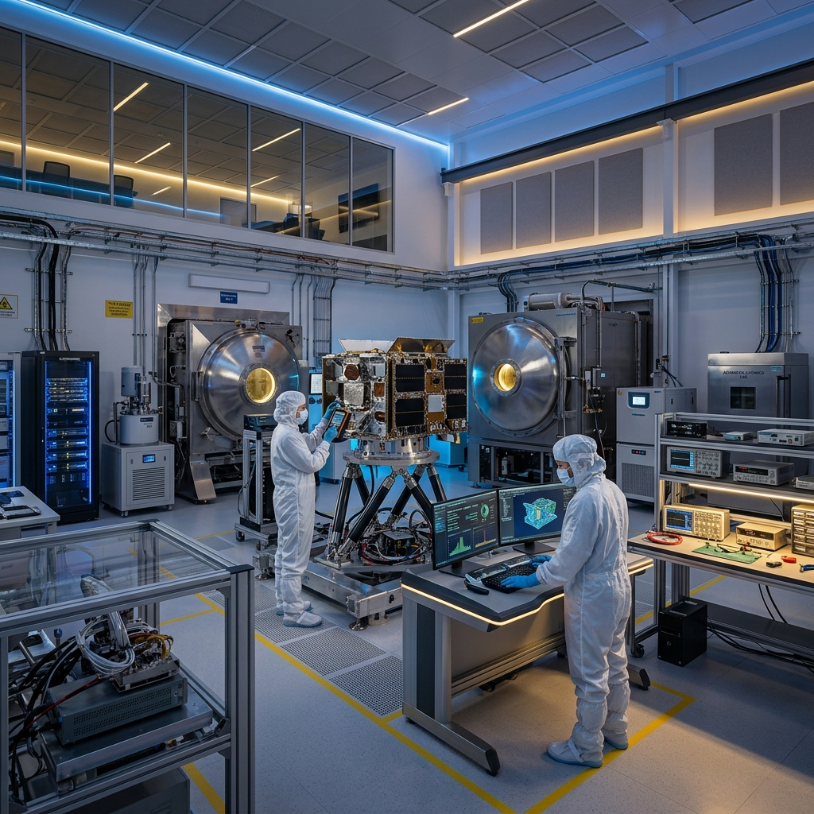
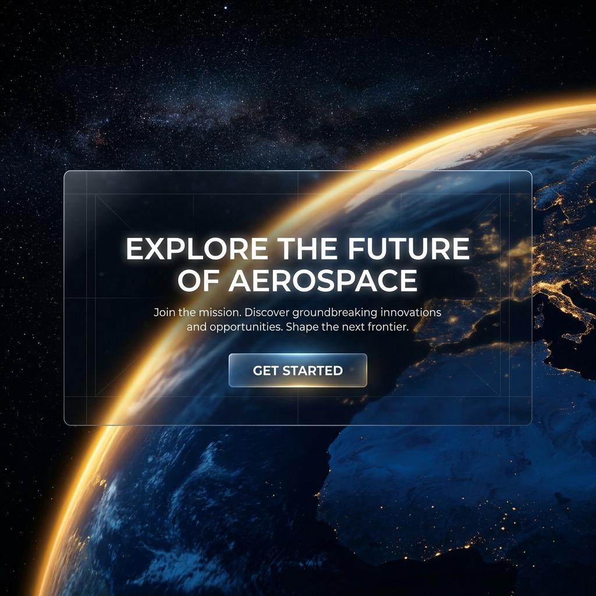

A INTENSIC é a ponta de lança em inovação. Como uma Instituição Científica e Tecnológica (ICT), impulsionamos o desenvolvimento orbital e suborbital do Brasil para o mundo.
Localizada no polo tecnológico de Campinas/SP, a INTENSIC (Instituição Científica, Tecnológica e de Inovação) atua no desenvolvimento de matrizes de alto desempenho para o setor aeroespacial.
Nossos laboratórios reúnem as mentes mais brilhantes do país num esforço colaborativo para desenvolver soluções em propulsão avançada, novos materiais e sistemas de navegação autônomos. Acreditamos que a exploração do espaço não é apenas um feito científico, mas a fundação de incontáveis melhorias para a vida na Terra.

Pesquisa aplicada em motores iônicos, sistemas propulsivos sustentáveis e testes de estabilidade termodinâmica em ambientes de microgravidade.
Desenvolvimento e validação de CubeSats e satélites de observação, focando em sistemas autônomos de constelações com integração algorítmica.
Ensaios mecânicos e térmicos em ligas exóticas, compostos de fibra de carbono e estruturas de proteção térmica projetadas para reentrada atmosférica.

A nova era comercial e investigativa do espaço exige parcerias sólidas. Conecte sua empresa, universidade ou iniciativa governamental aos recursos de ponta da INTENSIC.
Agendar Sessão EstratégicaEstamos abertos para colaborações científicas, parcerias industriais e missões governamentais.
Rua Dr. Ricardo Benetton Martins, 1000
Polo II de Alta Tecnologia
Campinas/SP - Brasil